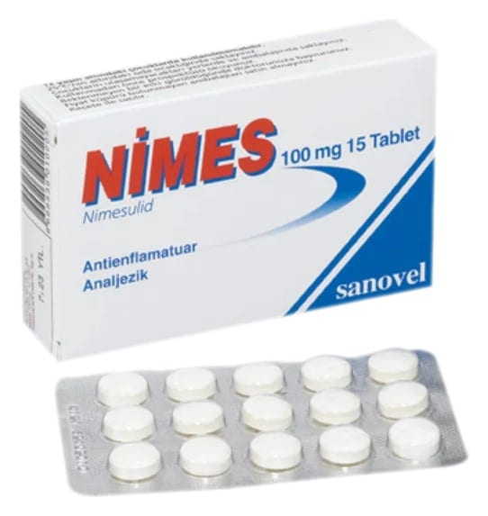

Nimes 100 mg Tablet, 15 Tablet

Ne için kullanılır
KT · Bölüm 1NİMES, soluk saman sarısı renginde çentikli yuvarlak tabletler halindedir. Her tablet, steroid olmayan antienflamatuvar ilaçlar (NSAİİ) grubundan olan 100 mg nimesulid içerir ve 15 ve 30 tabletlik blister ambalajlarda kullanıma sunulmuştur.
Nimes, akut ağrı ve adet dönemi ağrılarında (primer dismenore) kullanılır. En uzun tedavi süresi 15 gündür.